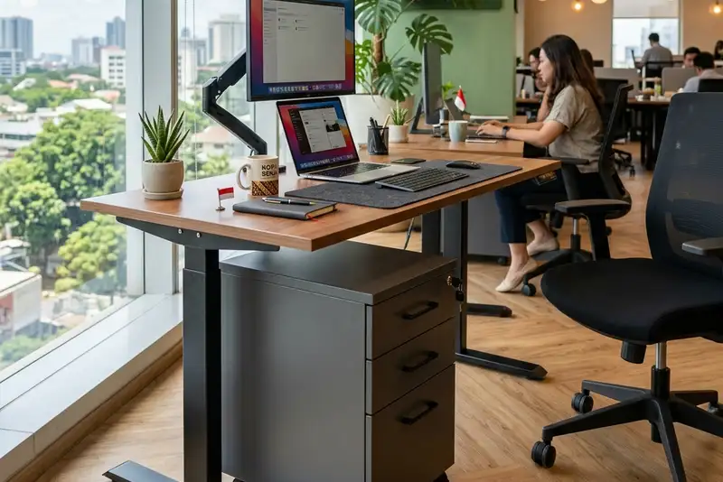

Daftar Isi
Lemari arsip beroda atau mobile pedestal drawer adalah unit laci kecil beroda yang dilengkapi kunci sentral, dirancang untuk mengikuti pengguna berpindah antar meja kerja fleksibel tanpa kehilangan akses ke arsip pribadi.
- Mobile pedestal drawer adalah laci arsip portabel dengan roda dan pengunci pusat.
- Kunci sentral mengamankan seluruh laci hanya dengan satu putaran kunci.
- Unit ini menjadi solusi standar untuk kantor dengan sistem hot desking.
- Ukuran yang ringkas membuatnya mudah diselipkan di bawah meja kerja apa pun.
- Material dan mekanisme roda menentukan daya tahan jangka panjang unit ini.
Apa Itu Mobile Pedestal Drawer?
Mobile pedestal drawer adalah lemari arsip berukuran kecil dengan dua hingga tiga laci yang berdiri di atas roda kastor, sehingga dapat digeser bebas dari satu titik kerja ke titik kerja lain.
Bentuknya menyerupai kabinet laci konvensional, namun bagian bawahnya dilengkapi roda dengan mekanisme pengunci agar unit tidak bergerak saat sedang digunakan. Tinggi unit umumnya disesuaikan agar sejajar dengan permukaan meja kerja standar, sehingga bisa berfungsi ganda sebagai kursi tambahan atau meja bantu di beberapa desain.
Konsep ini berkembang seiring meningkatnya kebutuhan ruang kerja yang tidak lagi terikat pada satu meja tetap per karyawan. Ketika posisi duduk berpindah setiap hari, arsip kerja dan dokumen pribadi tetap perlu tempat penyimpanan yang jelas kepemilikannya, dan di situlah mobile pedestal drawer mengambil peran.
Bagaimana Cara Kerja Kunci Sentral pada Lemari Arsip Beroda?
Kunci sentral bekerja dengan satu mekanisme kunci tunggal yang mengunci seluruh laci sekaligus melalui batang pengunci vertikal di bagian dalam unit.
Saat kunci diputar, sebuah batang logam bergerak naik atau turun dan mengaitkan seluruh laci dalam satu gerakan. Pengguna tidak perlu mengunci laci satu per satu, cukup satu putaran kunci untuk mengamankan seluruh isi lemari. Sistem ini umum digunakan pada furnitur kantor karena lebih cepat dioperasikan dibanding kunci per laci, sekaligus mengurangi risiko ada laci yang lupa terkunci.
Beberapa varian kunci sentral juga dilengkapi indikator visual sederhana yang menunjukkan status terkunci atau terbuka, memudahkan pengguna memastikan kondisi lemari sebelum meninggalkan meja kerja.
Kapan Lemari Arsip Beroda Lebih Cocok Dipakai?
Lemari arsip beroda paling relevan digunakan pada kantor dengan konsep hot desking, ruang kerja bersama, atau area kerja yang layoutnya sering berubah.
Pada kantor dengan meja kerja tetap per individu, kebutuhan mobilitas penyimpanan cenderung rendah karena arsip bisa disimpan di lemari statis dekat meja. Namun pada lingkungan kerja fleksibel, di mana karyawan tidak memiliki meja tetap, mobile pedestal drawer memungkinkan setiap orang membawa serta dokumen dan barang pribadi ke titik kerja mana pun tanpa perlu memindahkan seluruh isi laci secara manual.
Situasi lain yang cocok termasuk ruang rapat multifungsi, area kerja proyek jangka pendek, dan kantor cabang dengan jumlah meja lebih sedikit dari jumlah karyawan aktif.
Apa Kelebihan dan Keterbatasan Mobile Pedestal Drawer?
Kelebihan utamanya terletak pada mobilitas dan keamanan terpusat, sementara keterbatasannya ada pada kapasitas penyimpanan yang lebih kecil dibanding lemari arsip statis.
Karena ukurannya dirancang ringkas agar mudah digeser, mobile pedestal drawer umumnya tidak ditujukan untuk menyimpan arsip dalam jumlah besar atau dokumen jangka panjang. Unit ini lebih cocok untuk alat tulis, dokumen kerja harian, dan barang pribadi ringan. Untuk kebutuhan arsip volume besar, kombinasi dengan lemari arsip statis di ruang penyimpanan terpusat umumnya tetap diperlukan.
Dari sisi material, unit dengan rangka logam atau kayu solid pada bagian struktural cenderung lebih tahan terhadap beban berulang dibanding material olahan yang lebih ringan, terutama pada titik pemasangan roda yang menerima tekanan langsung setiap kali unit dipindahkan.
Hal Apa Saja yang Perlu Diperhatikan Sebelum Memesan?
Sebelum memesan, perhatikan jenis roda, kapasitas beban laci, dan mekanisme kunci sentral yang ditawarkan.
Roda dengan mekanisme rem sederhana membantu unit tetap diam saat digunakan di meja kerja. Kapasitas beban laci sebaiknya disesuaikan dengan jenis dokumen atau barang yang akan disimpan, karena laci dengan rel logam umumnya lebih tahan lama dibanding rel plastik pada pemakaian intensif. Mekanisme kunci sentral juga sebaiknya diuji langsung saat pengecekan unit untuk memastikan seluruh laci terkunci serempak tanpa hambatan.
Konsultasi dengan penyedia jasa kontraktor furnitur kantor dapat membantu menyesuaikan ukuran, material, dan jumlah laci dengan kebutuhan ruang kerja fleksibel secara spesifik.